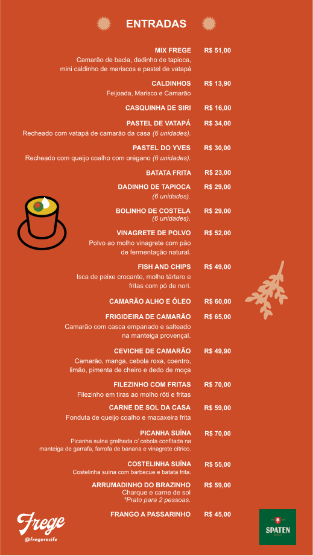
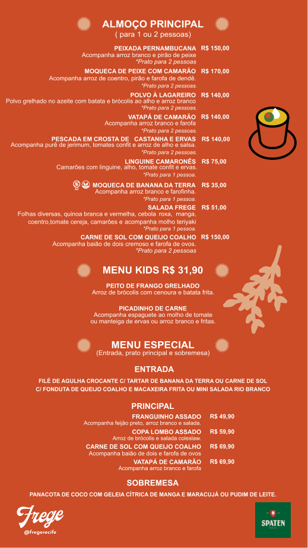
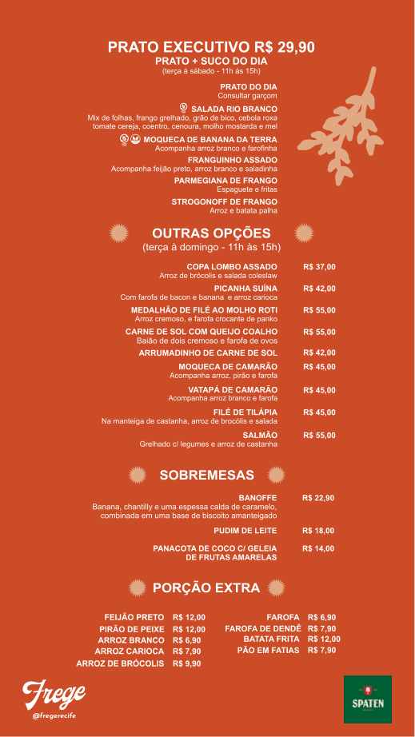
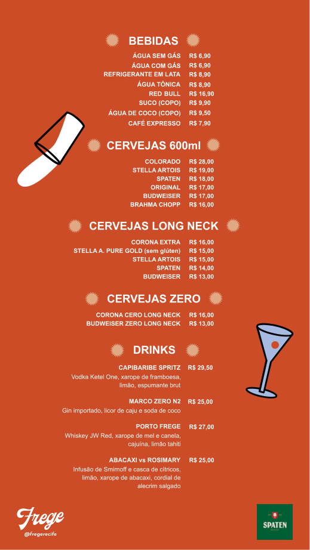

Atualizado online
Prato do dia
Pagina 1
Entradas
Pagina 2
Almoco principal

Pagina 3
Executivo, sobremesas e extras

Pagina 4
Bebidas e cervejas

Paginas 5 e 6
Coqueteis e classicos
Destaque do menu
Destilados e cachacas
Paginas 7 e 8